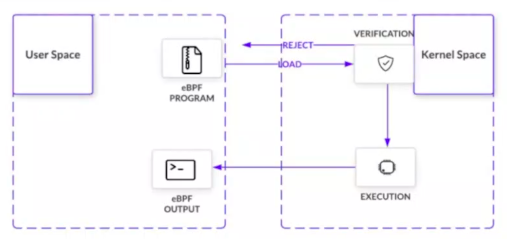
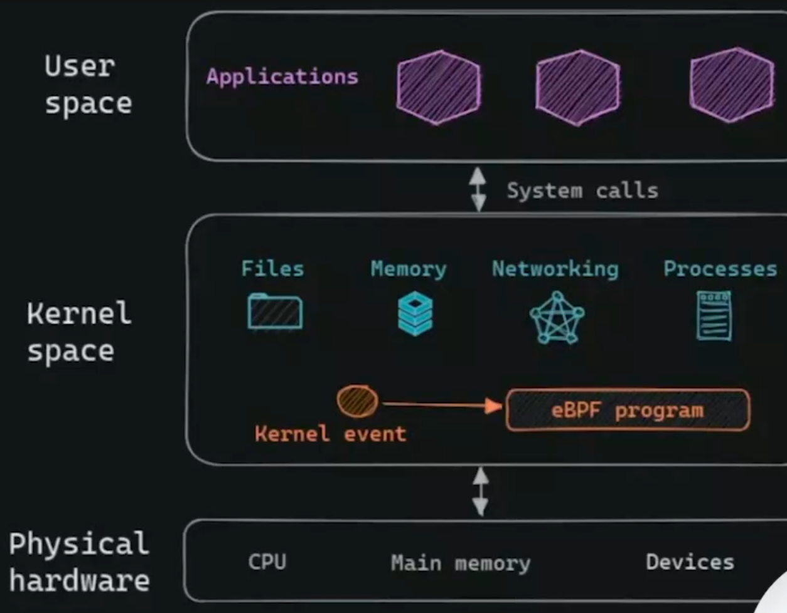
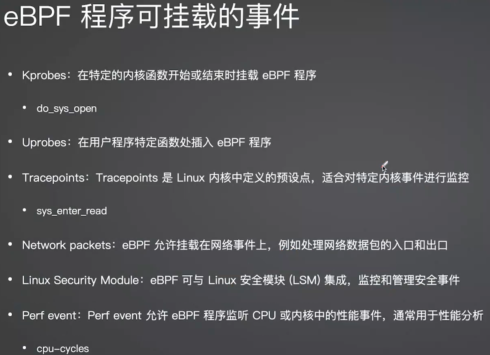

简单记录一下，以后再充实内容，资料再多也只是占网盘/硬盘空间，关键还是看你能否坚持学下去，能否顺利消化吸收新的知识。
后端开发语言很多，原则上，并不推荐投入太多精力在学习各种不同的语言上，建议先精通一门，触类旁通，要注意提高使用算法和设计模式的能力。
基础学习
leetcode探索- leetcode的一个专题，内容很丰富，值得学习。***.com
刷题
leetcode- 已经有中文网站***.com剑指Offer- 其实是一本书，不过牛客网可以在线刷题。***.com程序员面试金典- CC150（《Cracking the Coding Interview程序员面试金典》）一书配套在线练习***.com浙大PTA- 浙大公开课辅助教学平台，这个是刷题模块。***.com
也有其它平台可以刷题，不过正常情况下，能把这两个平台上的题刷好已经需要相当时间了。
关于数据结构和算法
详细内容见 笔记。
消息订阅系统
发布与订阅消息系统的概念
数据（消息）的发送者（发布者）不会直接把消息发送给接收者，这是发布与订阅消息系统的一个特点。
发布者以某种方式对消息进行分类，接收者（订阅者）订阅它们，比便接收特定类型的消息。
发布与订阅系统一般会有一个broker，即发布消息的中心点。
消息(Message)
定义：在应用间传送的数据。(简单的如文本字符串、json等，复杂的如内嵌对象。)
消息队列中间件(Message Queue Middleware)
简称MQ，是指 利用高效可靠的消息传递机制 进行与平台无关的数据交流，并基于数据通信来进行分布式系统的集成。
通过提供消息传递和消息排队模型，它可以在分布式环境下扩展进程间的通信。
2种传递模式
消息队列中间件，也称为消息队列或消息中间件。一般有2种传递模式点对点(P2P, Point-to-Point)模式和发布/订阅(Pub/Sub)模式。
常用开源消息中间件
搜索引擎相关
主要是关于Sphinx、ElasticSearch相关的笔记，详见此处
负载均衡算法
(待补充)
分布式系统常见负载均衡算法
Nginx负载均衡算法
RPC
RPC: Remote Procedure Call，即远程过程调用。
Feed
- feed是将用户主动订阅的若干消息源组合在一起形成内容聚合器，帮助用户持续地获取最新的订阅源内容。
- feed流即持续更新并呈现给用户内容的信息流。
面试准备
一般公司面试时对知识点的广度和深度都有一定要求，虽然完全要掌握会花费大量时间，但是面试毕竟也是在有限时间内，且面试中高频被问到的知识点也是在有限范围内，故可以参考二八法则，集中利用20%的知识点去掌握好80%的知识。
- 一文帮你理清面试知识点
- coding-interview-university -- A complete computer science study plan to become a software engineer.
阅读摘录
- 成为优秀程序员的必要条件之一：可以根据应用场景选择最合适的算法。
其它
常见web后端组合
php + laravel/thinkphp
java + spring boot
python + django/flask
go + gin/beego
ruby on rails
新语言十步法
(by PegasusWang)
- 1.安装并且搭建开发环境。
- 2.基础类型和符合类型。基础类型，符合类型。
- 3.控制流语句。判断、循环、选择。
- 4.函数。定义方式，传值和返回值。
- 5.面向对象。数据和方法，组合and继承。
- 6.内置库（文件、网络、时间、日志等）。
- 7.找一个广泛使用的第三方库开始写（抄）项目。
- 8.边写边查，常用代码片段总结成文档。比如 golang 里边各种转换。
- 9.第三方库快速编写 demo。
- 10.最佳实践：遇到的坑；代码分层；单元测试；静态检查。
IDE Tips
PyCharm/VS code全局检查代码中是否含有中文的最快捷方式
以PyCharm为例:
1. 开全局搜索，快捷键为：Ctrl + Shift + F
2. 点击".*"开启正则表达式搜索匹配
3. 输入下面的正则表达式：
[\u4e00-\u9fa5]+
这样搜索结果会将所有中文匹配出来并显示
常用术语Term
- 序列化 Serialization：
对象 -> 字节序列，是将对象的状态信息转换为可以存储或传输的形式的过程。对应Encode，编码的过程 - 反序列化 Deserialization：
字节序列 -> 对象， 是将可以存储或传输的形式转换为对象的状态信息的过程。对应Decode，解码的过程
定位后端开发的书籍推荐
ref: 定位后端开发的书籍推荐
1.算法和数据结构。基础，无论校招还是社招。
大厂社招又不太一样，因为除了要准备算法和数据结构以外，还得准备有项目经验、了解操作系统原理、熟悉网络通信、了解数据库、熟悉要求的各种开源框架和技术等等，实在太多了，即使再怎么准备也不一定能一举拿下。
2.操作系统
Tanenbaum.A.S 《现代操作系统》，当然，我的建议是这种书毕竟流于理论知识，也不一定要看完，但一定将一些基础概念，如进程线程内存模式等基础概念看懂理解。
如果还有时间强烈推荐看看俞甲子的 《程序员的自我修养:链接、装载与库》，这本书同时涉及到了 Windows 和 Linux 两个操作系统平台，用各种辅助工具剖析了程序从源码到二进制文件再到装载到进程地址空间里面的各个细节，甚至连进程地址空间中的堆结构、栈结构也分析得清清楚楚，同时也分析了 C Runtime（CRT）、glibc 这样的操作系统接口库的原理和执行逻辑，是一本实实在在难得的帮你实战操作系统原理的一本好书。
“CPU体系结构、汇编、C语言（包括C++）和操作系统，永远都是编程大师们的护身法宝，就如同少林寺的《易筋经》，是最为上乘的武功；学会了《易筋经》，你将无所不能，任你创造武功；学会了编程“易筋经”，大师们可以任意开发操作系统、编译器，甚至是开发一种新的程序设计语言！“
3.一门编程语言
你只有熟练使用一门编程语言，你才能将你的想法变成现实。
首推 C/C++ - 《C 语言程序设计:现代方法》。 - 如果你想掌握好 C++，《深度探索 C++ 对象模型》是一定要看的
4.计算机网络
- 《计算机网络：自顶向下方法》 你一定要看懂而不是看完。比如三次握手和四次挥手的细节，你一定要很清楚。
- 韩国人尹圣雨写的这本《TCP/IP 网络编程》，初级水平，强烈建议看看这本书。
5.Linux系统编程 - Robert Love 的《Linux 系统编程》、《Linux 内核设计与实现》
强调一下，如果你是快毕业的学生，面临着找工作的压力，应该以算法和数据结构为主。如果你是大一大二或研一这个阶段的学生，我上面推荐的书，你还是可以考虑好好咀嚼一下,标准是看懂而不是看完。
6.汇编
- 王爽老师的《汇编语言(第 3 版)》（有第4版了）
- 《老码识途：从机器码到框架的系统观逆向修炼之路》
Debugging
Debugging推荐书籍： 1.软件调试修炼之道 2.Effective Debugging: 软件和系统调试的66个有效方法
常见错误类型：
语法错误、运行时错误、逻辑错误。
代码调试流程：
复现 -> 定位 -> 修复 -> 验证 ==> 复盘（记录下犯过的错误并归类，加入没通过的单元测试用例）
定位问题的方法：
- 看日志，加关键日志（如：ELK/Sentry）
- 命令行断点调试 （如：gdb或ipdb）
- IDE调试
- 小黄鸭调试（审查：请别人帮忙审查代码或自己详细地向小黄鸭解释每行代码）
常用实践型学习方式
学习基本知识点 -> 明确需求 -> 动手写代码 -> 遇到难题 -> 通过百度/Google寻找解决方案 -> 不断的测试实践发现Bug
-> 验证解决思路 -> 寻找更好的实现方案（有精力最好代码实现并验证） -> 思考更深入的问题（很多人做不到这步）
关于发布的版本
RC=Release Candidate, 发布候选版，是最终版(RTM=Release To Manufacture)之前的最后一个版本。
广义上对测试有三个传统的称呼：alpha、beta、gamma，用来标识测试的阶段和范围。
alpha 是指内测，即CB，指开发团队内部测试的版本或者有限用户体验测试版本。
beta 是指公测，即针对所有用户公开的测试版本。
gamma (这个不常听见)，beta测试后做过一些修改，成为正式发布的候选版本时叫做RC（Release Candidate）。
其他推荐
- 工程师应该怎么学习 -- 若对自我提升不得其法，推荐仔细阅读
- 程序员的7堂职场课 -- 本人是利用租约优惠免费看的，没想到内容真的还不错，内容偏向软技能，建议对自己职业生涯规划不足和陷入迷茫的程序员阅读
- 技术人如何快速且深入地学习一门新技术？
Jetbrains系列产品重置试用
2021.2.3之后的版本已失效
0x1. 如何安装
1). 插件市场安装：
在Settings/Preferences... -> Plugins 内手动添加第三方插件仓库地址：***.com
搜索：IDE Eval Reset插件进行安装。如果搜索不到请注意是否做好了上一步？网络是否通畅？
插件会提示安装成功。
2). 下载安装：
点击这个链接(v2.3.5)下载插件的zip包（macOS可能会自动解压，然后把zip包丢进回收站）
通常可以直接把zip包拖进IDE的窗口来进行插件的安装。如果无法拖动安装，你可以在Settings/Preferences... -> Plugins 里手动安装插件（Install Plugin From Disk...）
插件会提示安装成功。
0x2. 如何使用
一般来说，在IDE窗口切出去或切回来时（窗口失去/得到焦点）会触发事件，检测是否长时间（25天）没有重置，给通知让你选择。（初次安装因为无法获取上次重置时间，会直接给予提示）
也可以手动唤出插件的主界面：
如果IDE没有打开项目，在Welcome界面点击菜单：Get Help -> Eval Reset
如果IDE打开了项目，点击菜单：Help -> Eval Reset
唤出的插件主界面中包含了一些显示信息，2个按钮，1个勾选项：
按钮：Reload 用来刷新界面上的显示信息。
按钮：Reset 点击会询问是否重置试用信息并重启IDE。选择Yes则执行重置操作并重启IDE生效，选择No则什么也不做。（此为手动重置方式）
勾选项：Auto reset before per restart 如果勾选了，则自勾选后每次重启/退出IDE时会自动重置试用信息，你无需做额外的事情。（此为自动重置方式）
如果你的IDE已经过了试用打不开，可以运行这个临时重置脚本（注意选择对应系统版本），它可以让你暂时进入IDE进行上述操作。（登录试用版本不适用，见下文）
- Jetbrains系列产品重置试用方法(仅限2021.2.3之前的版本)
- ide-eval-resetter-2.3.5
- tmp reset
你的编程能力从什么时候开始突飞猛进？
转自知乎：口天师兄 的回答
百度多了
你就明白：它也许有用，但它封印了你精进计算机英语的机会。
Google多了
你就明白：各地大佬们的文章很Nice，但它们仅是你技术知识体系的精华补充。
开始读书了
你就明白：你以往东拼西凑几十篇烂文才明白的事，书上那几页纸都写着，而且详细的很。
接触到国外大社的书后
你就明白：国内那些21天宝典，7周速成，都是些什么玩意，误人子弟！
图灵牛逼，动物牛逼，Manning牛逼。
好书读多了
你就明白：技术是一环扣一环的，有牢固的技术知识体系，学啥都事半功倍。
多做业务
你就明白：所学的技术该用在哪。
多做用户量大的业务
你就明白：光会用技术，和用好技术是两码子事。
多找第三方开源
你就明白：原来工作摸鱼不是梦。
太随便用第三方
你就明白：某天需求一变，它兼顾不到，可以把你往死里坑，坑到你得去看源码。
第一次看完源码
你就明白：开始还是很讨厌的，等全盘搞明白了，发现“咦~有点意思”。
源码看多了
你就明白：自己的查克拉莫名的增多了。而且吐槽文档不全的习惯也渐渐少了，一个不服就跑去观摩别人的源码，顺便偷个师。
再往后，或许你的技术确实突飞猛进了，然而你却只会觉得编程本来就是这个样子的。
因为，但凡通过点滴付出，累积出来的结果，都是平淡无声的。
性能优化
问题列表
[1]关于性能优化问题如何下手解决？
- 时空折中： 时间time、空间space
（在时间复杂度和空间复杂度之间做取舍和平衡）
-
模块间的中间件：
内存、文件、数据库（需要考虑网络带来的瓶颈）。 -
内存： 速度快、空间小、临时存储、可以直接操作包含的数据对象、价格贵、单进程、复杂结构
-
文件： 速度慢、空间大、持久化存储、不可直接操作包含的数据对象、价格便宜、可执行、文件名
（PS：一个面试题：不用数据库，只用文件如何做去重？）
-
数据库： 速度中、空间中、持久化存储or临时存储（内存型），可以直接操作包含的数据对象，价格中、多进程、复杂结构
（不同类型数据库的特性不同。内存型数据库，内存多进程）
- 遇到一个技术需求：理清何时使用
内存/文件/数据库/消息系统，做好取舍。
阅读推荐
- 性能之巅：洞悉系统、企业与云计算
eBPF
什么是eBPF
eBPF(extend Berkeley Packet Filter)，让Kernel内核实现可编程化。
为什么需要eBPF

可以把ebpf程序放到内核中动态的执行，实际是一个sandbox环境，不会改变内核本身。
内核中的验证器(图verification)会检验ebpf程序是否安全。
程序能运行且不需要重启。
用户空间（User Space）和内核空间（Kernel Space）
1.用户空间（User Space）是所有应用程序运行的地方
2.内核空间（Kernel Space）位于 用户空间（User Space）和 物理硬件（Physical Hardware）之间。
用户空间中的应用程序无法直接访问硬件，它们会向内核发出系统调用，然后由内核再访问硬件。

eBPF工作原理
- 基于事件驱动，在特定事件发生时触发Hooks，调用eBPF程序来获取数据。
- Hooks可以在用户空间和内核空间，也可以是静态和动态的。
- 静态的Hooks一般是内核开发人员预定义的一些事件。
- 动态的Hooks，比如
kprobes和uprobes是最常用的。
eBPF程序可挂载的事件

GraphQL
RPC
RPC概念讲解
RPC: Remote Procedure Call，即远程过程调用。
是分布式系统常见的一种通信方式，从跨进程到物理机已经有几十年历史。
- 跨进程交互形式：RESTful、WebService、HTTP、基于DB做数据交换、基于MQ做数据交换，以及RPC。
现有框架对比
原理剖析
技术栈介绍
高并发
如何设计高并发方案
1.减少单次请求时间
如何减少单次请求时间？
- 代码优化
- 算法优化
- 业务流程优化
- 使用缓存
- 本地缓存
- 分布式缓存
- 客户端缓存
- CDN (如：可用性、性能、监控、多CDN、动态调度)
2.有效使用更多资源
如何有效使用更多的资源？
- 分库分表，读写分离
- 应用拆分
- 服务拆分
- 分布式服务
- 2PC: 二阶段提交(Two-phaseCommit)是指，在计算机网络以及数据库领域内，为了使基于分布式系统架构下的所有节点在进行事务提交时保持一致性而设计的一种算法(Algorithm)。
- 3PC: 三阶段提交又称3PC，其在两阶段提交的基础上增加了CanCommit阶段，并引入了超时机制。一旦事务参与者迟迟没有收到协调者的Commit请求，就会自动进行本地commit，这样相对有效地解决了协调者单点故障的问题。
- TCC: TCC（Try-Confirm-Cancel）又称补偿事务。其核心思想是："针对每个操作都要注册一个与其对应的确认和补偿（撤销操作）"。
- 基于本地消息表
- 基于消息队列
解决高并发问题有哪些方法?
难点
- 复杂
- 涉及多方面知识
- 偶发
方法
- 自上而下：从现象和代码推演原因
-
工具： 日志、监控、tcpcopy
-
自下而上：从原理推演原因
- 工具：系统工具、语言工具
如何提升解决高并发问题的能力
- 夯实基础
- 多参与、多分析
- 多思考，多总结
REF
- 设计高并发方案的技巧
C
不是底层和嵌入式开发，是C不是必学的，但是这是二进制逆向的基本功之一，绕不卡要学的。
学习推荐
book
- Learn C the Hard Way 笨办法学C
- The C Programming Language C语言程序设计第2版 K&R 另有一本解答版也有中文版
video
- learn c the hard way - 中文字幕配套视频 -- 0基础入门，MacOS C
- 实用C 语言教程 -- Linux C，也是根据1做的，如果看完1课略过。需要一定编程基础的快速入门
- 【极安御信】二进制安全 | PC逆向 C++基础系列课程 163集 -- Windows C, 二进制基础，对新手比较友好
- 极安御信C&汇编训练营（第零期直播） -- 和3对比下，内容可能有重复，优先学3
IDE
Visual Studio
除非有key，不然默认选择community版，Windows C开发首选
最新版本
默认下载的是联网安装包
***.com
利用最新版本在线安装包下载离线完整安装包
打开CMD，进入在线安装VisualStudioSetup.exe所在目录E:\win10software\visualstudio，新建目录complete。
执行如下命令：
E:\win10software\visualstudio> VisualStudioSetup.exe --layout E:\win10software\visualstudio\complete --all --includeRecommended --includeOptional --lang zh-CN
历史版本
PS:会被强制跳转页面
***.com
CLion
JetBrain全家桶之一，Linux C开发推荐
Java
后端老大哥地位不可动摇。
Java SE Download
Oracle管网下载，因为漏洞复现经常需要历史版本，所以给一个官方历史版本下载地址
学习推荐
Java秘籍一本 -- 每天半小时到一小时， 一年精通Java。
java打包
命令行打包名为pctest的项目
jar -cvf 1.jar .
java -jar 1.jar # 如果提示没有主属性，可以用解压软件打开1.jar文件，修改META-INF/MANIFEST.MF内容，指定主类。比如加上: Main-Class: com.company.Main
jvm性能调优工具
jps 类似于linux的ps命令,但是它只列出系统中所有的Java应用程序
Perl
国外旧设备用Perl做后端的居然不少，稍微记录一些笔记
Common Issue
perl语言中的.pm文件和.pl文件区别
按照惯例:
.pm 应该保存 Perl Module，也就是 Perl 模块。例如 Socket.pm
.pl 应该保存 Perl Library，也就是 Perl 库文件。例如 ***.com
.plx 应该保存 Perl 脚本。
实际上大家都习惯用 .pl 来保存 Perl 脚本。
另外，use语句会自动搜索后缀为.pm的文件，因此如果你想要写一个模块，那么最好还是以.pm做后缀好了。
加载方式：
.pm文件通常用use module;来加载
.pl文件通常用require ***.com;来加载
代理
一般提到代理，大多会想到科学上网用的梯子，不过这篇笔记不会专门说这个。这里主要记录'正向代理'和'反向代理'，辅之说明下'透明代理'。
正向代理 Forward Proxy
正常情况下，现在应该很少用了吧。
反向代理 Reverse Proxy
做过后端开发的朋友应该不陌生。一般网站的Nginx配置大多站点都使用的反向代理。
透明代理
todo
两者区别
虽然网上有一堆资料做详细说明，但个人认为记住以下内容最重要：
两者的区别在于代理的对象不同：正向代理 代理的对象是客户端，反向代理 代理的对象是服务端
换言之，正向代理隐藏真实客户端，反向代理隐藏真实服务端
踩坑笔记
Tips:
因为v2是和caddy一起部署的，所以，要注意，如果要用nginx配置站点，需要停掉caddy，不先停掉caddy，则nginx无法启动
systemctl status caddy # 查看caddy运行状态
systemctl stop caddy # 停掉caddy
然后，执行命令启动 nginx
systemctl start nginx # 启动nginx
浏览器代理插件
本来proxy switchy omega用着还挺好，但因为原作者因不可抗力不能继续更新后，经过Google和Firefox的各种更新后，老版本插件已无法正常安装使用。
替代方式是在附加组件市场搜索：ZeroOmega，这个插件据说是发布者基于proxy switchy omega的开源版本修改的，使用方式一致，可无缝备份切换配置，关键是能在最新版本的Google和Firefox浏览器上使用。
Firefox -> ZeroOmega
Chrome -> Proxy SwitchyOmega 3 (ZeroOmega)
大数据
Hadoop3的3大组件（从Hadoop2.X开始）：
分布式数据存储、分布式计算、集群的资源管理
Spark、Flink都只是计算框架，不负责海量数据存储，都依赖于Hadoop的数据存储。
一般大数据的分析结果由BI同时进行展现。
开发技术栈要求
- Linux基本操作
- Shell脚本基础
- JavaSE内容
- IDEA开发工具
- MySQL数据的基本使用
Hadoop 3.0
Hadoop是一个适合海量数据存储和计算的平台，它已经成为大数据的代名词。
Kafka
Flume
Flume是Cloudera提供的一个高可用的，高可靠的，分布式的海量日志采集、聚合和传输的系统。Flume基于流式架构灵活简单。
Flume视频
Term 术语
OLTP 联机事务处理
业务类系统主要供基层人员使用，进行一线业务操作，通常被称为OLTP（On-Line Transaction Processing，联机事务处理）。
OLAP 联机分析处理
数据分析的目标则是探索并挖掘数据价值，作为企业高层进行决策的参考，通常被称为OLAP（On-Line Analytical Processing，联机分析处理）。
ClickHouse
ClickHouse是近年来备受关注的开源列式数据库，主要用于数据分析（OLAP）领域。
ref: ClickHouse深度揭秘
Vim
Vim 快捷操作
一般来说，线上开发环境大家都习惯用命令行修改，故基本的Vim快捷操作还是要熟悉的。
一般模式
按小写u键为撤销上一步操作
按ctrl+r则为反撤销操作
Vim 批量注释
方法1（常用）
1.ctrl+v 进入列编辑模式，向下或向上移动光标，把需要注释的行的开头标记起来。
2.按大写的I(shift+i),再插入注释符,比如"//"。
3.再按Esc,就会在选中的行前面都插入"//"，即全部注释了。
方法2 (利用全局替换)
行首添加注释
使用下面命令在指定的行首添加注释：
:起始行号,结束行号s/^/注释符/g
取消注释
:起始行号,结束行号s/^注释符//g
1.在10 - 20行添加 // 注释
:10,50s#^#//#g
2.在10 - 20行删除 // 注释
:10,20s#^//##g
清空文件内容
在命令模式下：
先执行：gg 跳至文件首行
再执行：dG 清空整个文件